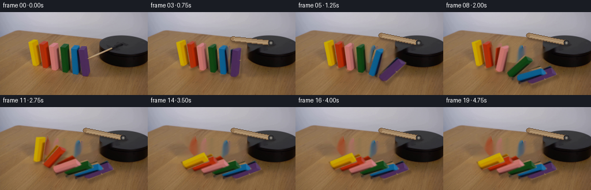
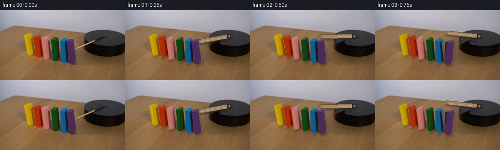
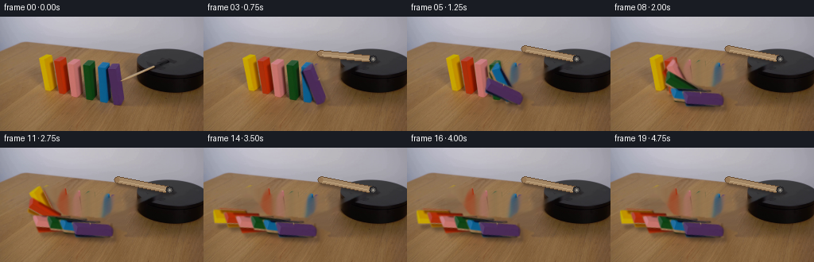
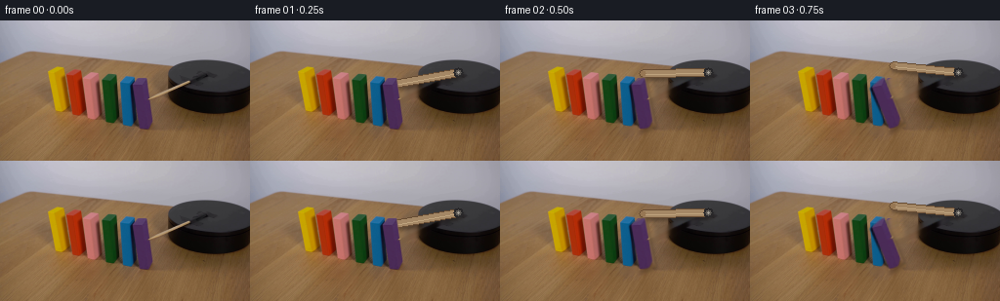

CODING AGENTS AS PIXEL WORLD MODELS
traex/GPT-5.6-Sol · 0036
点击播放 · 原生 RGB 像素
逐轮保存的候选
回放视频、检查图与代码变化。
每份候选均可单独播放。实际图片检查记录在下方工具轨迹中。
候选 01播放与检查图
点击播放 · 原生 RGB 像素


展开代码变化
--- 上一保存版本
+++ 本次保存版本
@@ -0,0 +1,205 @@
+"""Generate a locked-camera domino demonstration from the supplied first frame.
+
+All of the motion is analytic: the striker rotates about its mounting pin and the
+six visible wooden blocks rotate in sequence about their lower, table-side
+corners. The photographed first frame supplies both texture and illumination.
+"""
+from pathlib import Path
+import math
+import cv2
+import numpy as np
+from PIL import Image
+import artifact_io
+
+CASE_DIR = Path(__file__).resolve().parent
+W, H = 256, 144
+
+
+def soft_polygon(poly, blur=0.65):
+ """Antialiased alpha matte for one photographed face."""
+ m = np.zeros((H, W), np.uint8)
+ cv2.fillConvexPoly(m, np.asarray(poly, np.int32), 255, lineType=cv2.LINE_AA)
+ if blur:
+ m = cv2.GaussianBlur(m, (0, 0), blur)
+ return m.astype(np.float32) / 255.0
+
+
+def affine_about(point, degrees):
+ # OpenCV's positive angles are counter-clockwise in displayed image space.
+ return cv2.getRotationMatrix2D(tuple(map(float, point)), degrees, 1.0)
+
+
+def over(dst, src, alpha):
+ a = np.clip(alpha[..., None], 0.0, 1.0)
+ return dst * (1.0 - a) + src * a
+
+
+def make_background(first, removal):
+ """Recover the stationary table under the blocks and old striker.
+
+ Navier-Stokes filling propagates the local grain/lighting rather than using
+ a flat painted patch. A faint horizontally carried residual restores the
+ small-scale grain in the broad center of the fill.
+ """
+ mask = (removal > 0).astype(np.uint8) * 255
+ bg = cv2.inpaint(first, mask, 4.0, cv2.INPAINT_NS)
+
+ # Add only very low amplitude table grain in the block-sized central hole.
+ # It is sampled from the clear part of this same photograph.
+ donor = first[:, :46].astype(np.float32)
+ low = cv2.GaussianBlur(donor, (0, 0), 2.2)
+ residual = donor - low
+ for x in range(46, 172):
+ sx = (x - 46) % 46
+ for y in range(47, 113):
+ if mask[y, x]:
+ strength = min(1.0, min(x - 44, 174 - x) / 14.0) * 0.34
+ bg[y, x] = np.clip(bg[y, x].astype(np.float32) +
+ strength * residual[y, sx], 0, 255)
+ return bg.astype(np.uint8)
+
+
+def striker_layer(angle_deg):
+ """Return RGBA-like color/alpha layers for the rotating wooden striker."""
+ pivot = np.array([213.0, 53.0])
+ length = 67.0
+ # The photographed rod initially points 157 degrees from its mounting pin.
+ a = math.radians(157.0 + angle_deg)
+ tip = pivot + length * np.array([math.cos(a), math.sin(a)])
+
+ shadow = np.zeros((H, W), np.float32)
+ sh_col = np.zeros((H, W, 3), np.float32)
+ sh_col[:] = (25, 17, 12)
+ p0s = tuple(np.rint(pivot + (2.0, 3.0)).astype(int))
+ p1s = tuple(np.rint(tip + (2.0, 3.0)).astype(int))
+ cv2.line(shadow, p0s, p1s, 0.34, 8, cv2.LINE_AA)
+ shadow = cv2.GaussianBlur(shadow, (0, 0), 1.5)
+
+ alpha = np.zeros((H, W), np.float32)
+ rgb = np.zeros((H, W, 3), np.float32)
+ # Build the round rod from dark edge, warm body and narrow reflected light.
+ q0, q1 = tuple(np.rint(pivot).astype(int)), tuple(np.rint(tip).astype(int))
+ cv2.line(alpha, q0, q1, 1.0, 7, cv2.LINE_AA)
+ cv2.line(rgb, q0, q1, (103, 76, 51), 7, cv2.LINE_AA)
+ cv2.line(rgb, q0, q1, (164, 135, 101), 5, cv2.LINE_AA)
+ # Offset highlight to the upper side in the fixed studio lighting.
+ n = np.array([-math.sin(a), math.cos(a)])
+ hi0 = tuple(np.rint(pivot - 1.15*n).astype(int))
+ hi1 = tuple(np.rint(tip - 1.15*n).astype(int))
+ cv2.line(rgb, hi0, hi1, (190, 163, 126), 1, cv2.LINE_AA)
+ cv2.circle(alpha, q1, 3, 1.0, -1, cv2.LINE_AA)
+ cv2.circle(rgb, q1, 3, (151, 119, 84), -1, cv2.LINE_AA)
+
+ # Fixed mounting washer makes the attachment to the black platform clear.
+ cv2.circle(alpha, q0, 5, 1.0, -1, cv2.LINE_AA)
+ cv2.circle(rgb, q0, 5, (40, 39, 41), -1, cv2.LINE_AA)
+ cv2.circle(rgb, q0, 3, (91, 88, 84), -1, cv2.LINE_AA)
+ cv2.circle(rgb, q0, 1, (163, 158, 148), -1, cv2.LINE_AA)
+ return sh_col, shadow, rgb, alpha
+
+
+def ease_fall(frame, start, final_angle):
+ """Gravity-like fall followed by a very small wooden impact rebound."""
+ duration = 4.15
+ u = (frame - start) / duration
+ if u <= 0:
+ return 0.0
+ if u < 1.0:
+ # Slow release, rapidly increasing speed under gravity.
+ return -final_angle * (u ** 1.62)
+ # Less than two degrees of damped settling after impact.
+ age = frame - (start + duration)
+ rebound = 1.45 * math.exp(-0.62 * age) * math.sin(2.65 * age)
+ return -final_angle + rebound
+
+
+def main():
+ first = np.asarray(Image.open(CASE_DIR / "first_frame.png").convert("RGB"),
+ dtype=np.uint8)
+ assert first.shape == (H, W, 3)
+
+ # Faces listed left-to-right. Their uneven quadrilaterals preserve the
+ # original camera perspective and hand-painted wood texture.
+ polys = [
+ [(48, 53), (66, 47), (72, 88), (57, 95)], # yellow
+ [(63, 58), (79, 49), (86, 92), (72, 98)], # orange-red
+ [(78, 64), (96, 52), (105, 98), (89, 103)], # rose
+ [(102, 62), (117, 54), (124, 103), (108, 106)], # green
+ [(119, 65), (133, 56), (141, 106), (125, 109)], # blue
+ [(133, 66), (149, 58), (158, 107), (142, 112)], # violet
+ ]
+ pivots = [(57, 95), (72, 98), (89, 103), (108, 106), (125, 109), (142, 112)]
+ mattes = [soft_polygon(p) for p in polys]
+
+ # Mask the original objects plus contact shadows. Keep the platform itself.
+ removal = np.zeros((H, W), np.uint8)
+ for p in polys:
+ cv2.fillConvexPoly(removal, np.asarray(p, np.int32), 255, cv2.LINE_AA)
+ cv2.line(removal, (149, 82), (214, 51), 255, 10, cv2.LINE_AA)
+ cv2.ellipse(removal, (108, 102), (64, 10), 4, 0, 360, 255, -1, cv2.LINE_AA)
+ # Do not erase platform pixels to the right except along the old rod.
+ removal = cv2.dilate(removal, np.ones((3, 3), np.uint8), iterations=1)
+ background = make_background(first, removal)
+
+ frames = [first.copy()] # Contract: frame 00 is byte-identical.
+ # Rightmost is hit first; subsequent contacts travel to the left.
+ starts = [9.35, 7.80, 6.25, 4.70, 3.15, 1.60]
+ final_angles = [79.0, 78.5, 79.0, 78.0, 79.0, 78.0]
+
+ for fi in range(1, 20):
+ canvas = background.astype(np.float32)
+
+ # The powered arm makes one decisive clockwise stroke, then remains down.
+ # Smooth acceleration avoids a mechanical one-frame jump.
+ su = min(1.0, fi / 5.25)
+ swing = 34.0 * (1.0 - (1.0 - su) ** 2.25)
+ shc, sha, rod, roda = striker_layer(swing)
+ canvas = over(canvas, shc, sha)
+ canvas = over(canvas, rod, roda)
+
+ # Broad, soft contact shadows track each face and anchor it to the table.
+ transformed = []
+ for i, (matte, pivot) in enumerate(zip(mattes, pivots)):
+ angle = ease_fall(fi, starts[i], final_angles[i])
+ M = affine_about(pivot, angle)
+ wm = cv2.warpAffine(matte, M, (W, H), flags=cv2.INTER_LINEAR,
+ borderMode=cv2.BORDER_CONSTANT, borderValue=0)
+ wi = cv2.warpAffine(first, M, (W, H), flags=cv2.INTER_LINEAR,
+ borderMode=cv2.BORDER_REFLECT_101).astype(np.float32)
+ transformed.append((i, angle, wm, wi))
+
+ dx = 2.0 + 0.025 * abs(angle)
+ dy = 3.0 + 0.035 * abs(angle)
+ SM = np.float32([[1, 0, dx], [0, 1, dy]])
+ sm = cv2.warpAffine(wm, SM, (W, H), flags=cv2.INTER_LINEAR,
+ borderMode=cv2.BORDER_CONSTANT, borderValue=0)
+ sm = cv2.GaussianBlur(sm, (0, 0), 1.7)
+ shadow_rgb = np.empty_like(canvas)
+ shadow_rgb[:] = (37, 25, 17)
+ canvas = over(canvas, shadow_rgb, 0.29 * sm)
+
+ # Draw rightmost first once falling, so each newly falling left neighbor
+ # naturally comes to rest above the block that triggered it.
+ for i, angle, wm, wi in reversed(transformed):
+ canvas = over(canvas, wi, wm)
+ # A restrained lower-edge contact shade adds depth after rotation.
+ if abs(angle) > 25:
+ edge = np.zeros((H, W), np.float32)
+ p = np.asarray(polys[i], np.float32)
+ M = affine_about(pivots[i], angle)
+ pp = cv2.transform(p[None, :, :], M)[0]
+ cv2.line(edge, tuple(np.rint(pp[2]).astype(int)),
+ tuple(np.rint(pp[3]).astype(int)), 0.16, 2, cv2.LINE_AA)
+ dark = np.empty_like(canvas); dark[:] = (48, 31, 20)
+ canvas = over(canvas, dark, edge * wm)
+
+ frames.append(np.clip(np.rint(canvas), 0, 255).astype(np.uint8))
+
+ out = np.stack(frames, axis=0)
+ assert out.shape == (20, H, W, 3) and out.dtype == np.uint8
+ assert np.array_equal(out[0], first)
+ artifact_io.save(out, CASE_DIR)
+
+
+if __name__ == "__main__":
+ main()
候选 02播放与检查图
点击播放 · 原生 RGB 像素


展开代码变化
--- 上一保存版本
+++ 本次保存版本
@@ -106,11 +106,13 @@
return 0.0
if u < 1.0:
# Slow release, rapidly increasing speed under gravity.
- return -final_angle * (u ** 1.62)
+ # Positive OpenCV rotation carries the upper end toward screen-left,
+ # i.e. away from the platform and into the next block in the row.
+ return final_angle * (u ** 1.62)
# Less than two degrees of damped settling after impact.
age = frame - (start + duration)
rebound = 1.45 * math.exp(-0.62 * age) * math.sin(2.65 * age)
- return -final_angle + rebound
+ return final_angle - rebound
def main():
@@ -130,6 +132,14 @@
]
pivots = [(57, 95), (72, 98), (89, 103), (108, 106), (125, 109), (142, 112)]
mattes = [soft_polygon(p) for p in polys]
+ block_clears = []
+ for p, pivot in zip(polys, pivots):
+ cm = np.zeros((H, W), np.uint8)
+ cv2.fillConvexPoly(cm, np.asarray(p, np.int32), 255, cv2.LINE_AA)
+ cv2.ellipse(cm, (pivot[0] - 1, pivot[1] + 1), (15, 5), 4,
+ 0, 360, 255, -1, cv2.LINE_AA)
+ cm = cv2.dilate(cm, np.ones((3, 3), np.uint8), iterations=1)
+ block_clears.append(cv2.GaussianBlur(cm, (0, 0), .55).astype(np.float32) / 255.)
# Mask the original objects plus contact shadows. Keep the platform itself.
removal = np.zeros((H, W), np.uint8)
@@ -141,13 +151,26 @@
removal = cv2.dilate(removal, np.ones((3, 3), np.uint8), iterations=1)
background = make_background(first, removal)
+ # Only this strip must change before the first block moves. Keeping all
+ # other pixels from the photograph prevents a background/lighting pop.
+ old_rod_clear = np.zeros((H, W), np.uint8)
+ cv2.line(old_rod_clear, (149, 82), (217, 49), 255, 9, cv2.LINE_AA)
+ old_rod_clear = cv2.GaussianBlur(old_rod_clear, (0, 0), .55).astype(np.float32) / 255.
+
frames = [first.copy()] # Contract: frame 00 is byte-identical.
# Rightmost is hit first; subsequent contacts travel to the left.
starts = [9.35, 7.80, 6.25, 4.70, 3.15, 1.60]
final_angles = [79.0, 78.5, 79.0, 78.0, 79.0, 78.0]
for fi in range(1, 20):
- canvas = background.astype(np.float32)
+ canvas = first.astype(np.float32)
+ canvas = over(canvas, background.astype(np.float32), old_rod_clear)
+
+ angles = [ease_fall(fi, starts[i], final_angles[i]) for i in range(6)]
+ # Reveal the table where a falling block used to stand.
+ for angle, clear in zip(angles, block_clears):
+ if abs(angle) > .12:
+ canvas = over(canvas, background.astype(np.float32), clear)
# The powered arm makes one decisive clockwise stroke, then remains down.
# Smooth acceleration avoids a mechanical one-frame jump.
@@ -160,7 +183,7 @@
# Broad, soft contact shadows track each face and anchor it to the table.
transformed = []
for i, (matte, pivot) in enumerate(zip(mattes, pivots)):
- angle = ease_fall(fi, starts[i], final_angles[i])
+ angle = angles[i]
M = affine_about(pivot, angle)
wm = cv2.warpAffine(matte, M, (W, H), flags=cv2.INTER_LINEAR,
borderMode=cv2.BORDER_CONSTANT, borderValue=0)
@@ -174,13 +197,14 @@
sm = cv2.warpAffine(wm, SM, (W, H), flags=cv2.INTER_LINEAR,
borderMode=cv2.BORDER_CONSTANT, borderValue=0)
sm = cv2.GaussianBlur(sm, (0, 0), 1.7)
- shadow_rgb = np.empty_like(canvas)
- shadow_rgb[:] = (37, 25, 17)
- canvas = over(canvas, shadow_rgb, 0.29 * sm)
-
- # Draw rightmost first once falling, so each newly falling left neighbor
- # naturally comes to rest above the block that triggered it.
- for i, angle, wm, wi in reversed(transformed):
+ if abs(angle) > .12:
+ shadow_rgb = np.empty_like(canvas)
+ shadow_rgb[:] = (37, 25, 17)
+ canvas = over(canvas, shadow_rgb, 0.29 * sm)
+
+ # Leftmost first: a striker-driven block physically lies over the next
+ # (left-hand) block which it has just knocked down.
+ for i, angle, wm, wi in transformed:
canvas = over(canvas, wi, wm)
# A restrained lower-edge contact shade adds depth after rotation.
if abs(angle) > 25:
可观测工具轨迹
实际执行的命令与返回图片。
命令 1exit 0
/bin/bash -lc "cat prompt.txt && printf '\\n---RULES---\\n' && cat GENERATION_RULES.md"
命令 2exit 0
/bin/bash -lc "find . -maxdepth 2 -type f -printf '%p %s bytes\\n' | sort && printf '\\nTOOLS\\n' && command -v ffmpeg || true && command -v python3 || true"
命令 3exit 0
/bin/bash -lc "python3 - <<'PY'
from PIL import Image
import numpy as np
im=np.array(Image.open('first_frame.png').convert('RGB'))
print(im.shape, im.dtype, im.min(), im.max())
# rows/cols avg and selected pixel samples
for y in [0,10,20,30,40,50,60,70,80,90,100,110,120,130,143]:
print('row',y,'mean',im[y].mean(0).round(1),'samples',[(x,im[y,x].tolist()) for x in [0,32,64,96,128,160,192,224,255]])
# color quant via kmeans if cv2
import cv2
Z=im.reshape(-1,3).astype(np.float32)
criteria=(cv2.TERM_CRITERIA_EPS+cv2.TERM_CRITERIA_MAX_ITER,30,0.2)
_,lab,cen=cv2.kmeans(Z,16,None,criteria,5,cv2.KMEANS_PP_CENTERS)
counts=np.bincount(lab.ravel(),minlength=16)
for i in np.argsort(-counts): print(counts[i],cen[i].round().astype(int).tolist())
PY"命令 4exit 0
/bin/bash -lc "python3 - <<'PY'
import cv2,numpy as np
im=cv2.cvtColor(cv2.imread('first_frame.png'),cv2.COLOR_BGR2RGB)
# hsv ranges report grid dominant labels from closest hand-defined classes
# connected comps masks conditions
conds={
'black':(im.max(2)<75),
'yellow':((im[:,:,0]>130)&(im[:,:,1]>80)&(im[:,:,2]<35)),
'red':((im[:,:,0]>120)&(im[:,:,0]>im[:,:,1]*1.35)&(im[:,:,1]<100)),
'pink':((im[:,:,0]>140)&(im[:,:,1]>70)&(im[:,:,1]<140)&(im[:,:,2]>65)&(im[:,:,2]<140)),
'blue':((im[:,:,2]>80)&(im[:,:,2]>im[:,:,0]*2)&(im[:,:,1]>50)),
'green':((im[:,:,1]>40)&(im[:,:,1]>im[:,:,0]*1.4)&(im[:,:,1]>im[:,:,2]*1.2)),
'purple':((im[:,:,2]>45)&(im[:,:,0]>45)&(im[:,:,2]>im[:,:,1]*1.25)),
}
for name,m in conds.items():
n,l,st,cent=cv2.connectedComponentsWithStats(m.astype('uint8'))
print('\\n',name,'pixels',m.sum())
for x,y,w,h,a in st[1:]:
if a>15: print(x,y,w,h,a)
# create 4 px binned ANSI-ish symbols based nearest centers
cent=np.array([[15,12,11],[194,152,2],[170,50,11],[188,117,108],[16,94,140],[18,64,19],[76,48,89],[135,100,64],[175,173,183]])
sym='K YRPBGWT'
for y in range(0,144,4):
s=''
for x in range(0,256,4):
p=im[y:y+4,x:x+4].mean((0,1)); i=((cent-p)**2).sum(1).argmin(); s+=sym[i]
print(f'{y:03}',s)
PY"命令 5exit 0
/bin/bash -lc "python3 - <<'PY'
import cv2, numpy as np
im=cv2.imread('first_frame.png')
g=cv2.cvtColor(im,cv2.COLOR_BGR2GRAY)
e=cv2.Canny(g,50,120)
ls=cv2.HoughLinesP(e,1,np.pi/180,15,minLineLength=8,maxLineGap=3)
for l in sorted(ls[:,0].tolist(), key=lambda p:(p[0],p[1])):
x1,y1,x2,y2=l; L=((x2-x1)**2+(y2-y1)**2)**.5
print(f'{x1:3},{y1:3} {x2:3},{y2:3} L={L:4.1f} a={np.degrees(np.arctan2(y2-y1,x2-x1)):6.1f}')
PY"命令 6exit 0
/bin/bash -lc "python3 - <<'PY'
from PIL import Image
import numpy as np
im=np.array(Image.open('first_frame.png'))
cent=np.array([[12,9,8],[54,54,56],[194,152,2],[170,50,11],[188,117,108],[16,94,140],[18,64,19],[76,48,89],[140,105,70],[175,173,183],[125,40,3]])
sy=np.array(list('##YRBGPT.wO')) # actually indices
# one char per 2x2 mean; print x labels
print(' '+''.join(str((x//10)%10) for x in range(0,256,2)))
print(' '+''.join(str(x%10) for x in range(0,256,2)))
for y in range(28,116,2):
s=''
for x in range(0,256,2):
p=im[y:y+2,x:x+2].mean((0,1)); s+=sy[((cent-p)**2).sum(1).argmin()]
print(f'{y:03} {s}')
PY"命令 7exit 0
/bin/bash -lc "python3 - <<'PY'
from PIL import Image
import numpy as np, colorsys
im=np.array(Image.open('first_frame.png').convert('RGB'))
# Print run samples each y every x in object region, classify HSV hue and dark
for y in [45,48,50,52,55,58,60,62,65,68,70,72,75,78,80,82,85,88,90,92,95,98,100,102,105,108]:
s=''
for x in range(40,256):
r,g,b=im[y,x]; mx=max(r,g,b); mn=min(r,g,b)
if mx<35: c='#'
elif mx<75: c='k'
elif mx-mn<15: c='d' if mx<120 else '.'
else:
h=colorsys.rgb_to_hsv(r/255,g/255,b/255)[0]*360
if h<15 or h>=345:c='R'
elif h<45:c='O'
elif h<75:c='Y'
elif h<165:c='G'
elif h<250:c='B'
elif h<330:c='P'
else:c='M'
s+=c
# RLE
runs=[]; st=40; last=s[0]
for i,c in enumerate(s[1:],41):
if c"'!=last:
if i-st>=2:runs.append(f'"'{st}-{i-1}{last}')
st=i;last=c
if 256-st>=2:runs.append(f'{st}-255{last}')
print(y,' '.join(runs))
# sample stick line bands
print('\\nline samples')
for x in range(150,221,5):
y=round(80+(x-152)*(54-80)/(211-152))
print((x,y),im[y,x].tolist(), 'near',im[max(0,y-2):y+3,x].mean(0).round().astype(int).tolist())
PY"命令 8exit 0
/bin/bash -lc "sed -n '1,240p' artifact_io.py"
命令 9exit 0
/bin/bash -lc "python3 - <<'PY'
from PIL import Image
import numpy as np
im=np.array(Image.open('first_frame.png'))
# cells every pixel around diagonal: for each x list pixels y near line and type based luminance+chroma
for x in range(145,221,2):
yc=round(145.3-.432*x)
vals=[]
for y in range(yc-4,yc+5):
p=im[y,x]; lum=p.mean();
if max(p)<25:c='#'
elif max(p)<75:c='k'
elif p[0]-p[2]>30:c='o'
elif max(p)-min(p)<15:c='g'
else:c='c'
vals.append(c)
print(f'{x:3} y{yc:2}', ''.join(vals), [im[yc,x].tolist()])
PY"命令 10exit 0
/bin/bash -lc "cat > generate.py <<'PY'
\"\"\"Generate a locked-camera domino demonstration from the supplied first frame.
All of the motion is analytic: the striker rotates about its mounting pin and the
six visible wooden blocks rotate in sequence about their lower, table-side
corners. The photographed first frame supplies both texture and illumination.
\"\"\"
from pathlib import Path
import math
import cv2
import numpy as np
from PIL import Image
import artifact_io
CASE_DIR = Path(__file__).resolve().parent
W, H = 256, 144
def soft_polygon(poly, blur=0.65):
\"\"\"Antialiased alpha matte for one photographed face.\"\"\"
m = np.zeros((H, W), np.uint8)
cv2.fillConvexPoly(m, np.asarray(poly, np.int32), 255, lineType=cv2.LINE_AA)
if blur:
m = cv2.GaussianBlur(m, (0, 0), blur)
return m.astype(np.float32) / 255.0
def affine_about(point, degrees):
# OpenCV's positive angles are counter-clockwise in displayed image space.
return cv2.getRotationMatrix2D(tuple(map(float, point)), degrees, 1.0)
def over(dst, src, alpha):
a = np.clip(alpha[..., None], 0.0, 1.0)
return dst * (1.0 - a) + src * a
def make_background(first, removal):
\"\"\"Recover the stationary table under the blocks and old striker.
Navier-Stokes filling propagates the local grain/lighting rather than using
a flat painted patch. A faint horizontally carried residual restores the
small-scale grain in the broad center of the fill.
\"\"\"
mask = (removal > 0).astype(np.uint8) * 255
bg = cv2.inpaint(first, mask, 4.0, cv2.INPAINT_NS)
# Add only very low amplitude table grain in the block-sized central hole.
# It is sampled from the clear part of this same photograph.
donor = first[:, :46].astype(np.float32)
low = cv2.GaussianBlur(donor, (0, 0), 2.2)
residual = donor - low
for x in range(46, 172):
sx = (x - 46) % 46
for y in range(47, 113):
if mask[y, x]:
strength = min(1.0, min(x - 44, 174 - x) / 14.0) * 0.34
bg[y, x] = np.clip(bg[y, x].astype(np.float32) +
strength * residual[y, sx], 0, 255)
return bg.astype(np.uint8)
def striker_layer(angle_deg):
\"\"\"Return RGBA-like color/alpha layers for the rotating wooden striker.\"\"\"
pivot = np.array([213.0, 53.0])
length = 67.0
# The photographed rod initially points 157 degrees from its mounting pin.
a = math.radians(157.0 + angle_deg)
tip = pivot + length * np.array([math.cos(a), math.sin(a)])
shadow = np.zeros((H, W), np.float32)
sh_col = np.zeros((H, W, 3), np.float32)
sh_col[:] = (25, 17, 12)
p0s = tuple(np.rint(pivot + (2.0, 3.0)).astype(int))
p1s = tuple(np.rint(tip + (2.0, 3.0)).astype(int))
cv2.line(shadow, p0s, p1s, 0.34, 8, cv2.LINE_AA)
shadow = cv2.GaussianBlur(shadow, (0, 0), 1.5)
alpha = np.zeros((H, W), np.float32)
rgb = np.zeros((H, W, 3), np.float32)
# Build the round rod from dark edge, warm body and narrow reflected light.
q0, q1 = tuple(np.rint(pivot).astype(int)), tuple(np.rint(tip).astype(int))
cv2.line(alpha, q0, q1, 1.0, 7, cv2.LINE_AA)
cv2.line(rgb, q0, q1, (103, 76, 51), 7, cv2.LINE_AA)
cv2.line(rgb, q0, q1, (164, 135, 101), 5, cv2.LINE_AA)
# Offset highlight to the upper side in the fixed studio lighting.
n = np.array([-math.sin(a), math.cos(a)])
hi0 = tuple(np.rint(pivot - 1.15*n).astype(int))
hi1 = tuple(np.rint(tip - 1.15*n).astype(int))
cv2.line(rgb, hi0, hi1, (190, 163, 126), 1, cv2.LINE_AA)
cv2.circle(alpha, q1, 3, 1.0, -1, cv2.LINE_AA)
cv2.circle(rgb, q1, 3, (151, 119, 84), -1, cv2.LINE_AA)
# Fixed mounting washer makes the attachment to the black platform clear.
cv2.circle(alpha, q0, 5, 1.0, -1, cv2.LINE_AA)
cv2.circle(rgb, q0, 5, (40, 39, 41), -1, cv2.LINE_AA)
cv2.circle(rgb, q0, 3, (91, 88, 84), -1, cv2.LINE_AA)
cv2.circle(rgb, q0, 1, (163, 158, 148), -1, cv2.LINE_AA)
return sh_col, shadow, rgb, alpha
def ease_fall(frame, start, final_angle):
\"\"\"Gravity-like fall followed by a very small wooden impact rebound.\"\"\"
duration = 4.15
u = (frame - start) / duration
if u <= 0:
return 0.0
if u < 1.0:
# Slow release, rapidly increasing speed under gravity.
return -final_angle * (u ** 1.62)
# Less than two degrees of damped settling after impact.
age = frame - (start + duration)
rebound = 1.45 * math.exp(-0.62 * age) * math.sin(2.65 * age)
return -final_angle + rebound
def main():
first = np.asarray(Image.open(CASE_DIR / \"first_frame.png\").convert(\"RGB\"),
dtype=np.uint8)
assert first.shape == (H, W, 3)
# Faces listed left-to-right. Their uneven quadrilaterals preserve the
# original camera perspective and hand-painted wood texture.
polys = [
[(48, 53), (66, 47), (72, 88), (57, 95)], # yellow
[(63, 58), (79, 49), (86, 92), (72, 98)], # orange-red
[(78, 64), (96, 52), (105, 98), (89, 103)], # rose
[(102, 62), (117, 54), (124, 103), (108, 106)], # green
[(119, 65), (133, 56), (141, 106), (125, 109)], # blue
[(133, 66), (149, 58), (158, 107), (142, 112)], # violet
]
pivots = [(57, 95), (72, 98), (89, 103), (108, 106), (125, 109), (142, 112)]
mattes = [soft_polygon(p) for p in polys]
# Mask the original objects plus contact shadows. Keep the platform itself.
removal = np.zeros((H, W), np.uint8)
for p in polys:
cv2.fillConvexPoly(removal, np.asarray(p, np.int32), 255, cv2.LINE_AA)
cv2.line(removal, (149, 82), (214, 51), 255, 10, cv2.LINE_AA)
cv2.ellipse(removal, (108, 102), (64, 10), 4, 0, 360, 255, -1, cv2.LINE_AA)
# Do not erase platform pixels to the right except along the old rod.
removal = cv2.dilate(removal, np.ones((3, 3), np.uint8), iterations=1)
background = make_background(first, removal)
frames = [first.copy()] # Contract: frame 00 is byte-identical.
# Rightmost is hit first; subsequent contacts travel to the left.
starts = [9.35, 7.80, 6.25, 4.70, 3.15, 1.60]
final_angles = [79.0, 78.5, 79.0, 78.0, 79.0, 78.0]
for fi in range(1, 20):
canvas = background.astype(np.float32)
# The powered arm makes one decisive clockwise stroke, then remains down.
# Smooth acceleration avoids a mechanical one-frame jump.
su = min(1.0, fi / 5.25)
swing = 34.0 * (1.0 - (1.0 - su) ** 2.25)
shc, sha, rod, roda = striker_layer(swing)
canvas = over(canvas, shc, sha)
canvas = over(canvas, rod, roda)
# Broad, soft contact shadows track each face and anchor it to the table.
transformed = []
for i, (matte, pivot) in enumerate(zip(mattes, pivots)):
angle = ease_fall(fi, starts[i], final_angles[i])
M = affine_about(pivot, angle)
wm = cv2.warpAffine(matte, M, (W, H), flags=cv2.INTER_LINEAR,
borderMode=cv2.BORDER_CONSTANT, borderValue=0)
wi = cv2.warpAffine(first, M, (W, H), flags=cv2.INTER_LINEAR,
borderMode=cv2.BORDER_REFLECT_101).astype(np.float32)
transformed.append((i, angle, wm, wi))
dx = 2.0 + 0.025 * abs(angle)
dy = 3.0 + 0.035 * abs(angle)
SM = np.float32([[1, 0, dx], [0, 1, dy]])
sm = cv2.warpAffine(wm, SM, (W, H), flags=cv2.INTER_LINEAR,
borderMode=cv2.BORDER_CONSTANT, borderValue=0)
sm = cv2.GaussianBlur(sm, (0, 0), 1.7)
shadow_rgb = np.empty_like(canvas)
shadow_rgb[:] = (37, 25, 17)
canvas = over(canvas, shadow_rgb, 0.29 * sm)
# Draw rightmost first once falling, so each newly falling left neighbor
# naturally comes to rest above the block that triggered it.
for i, angle, wm, wi in reversed(transformed):
canvas = over(canvas, wi, wm)
# A restrained lower-edge contact shade adds depth after rotation.
if abs(angle) > 25:
edge = np.zeros((H, W), np.float32)
p = np.asarray(polys[i], np.float32)
M = affine_about(pivots[i], angle)
pp = cv2.transform(p[None, :, :], M)[0]
cv2.line(edge, tuple(np.rint(pp[2]).astype(int)),
tuple(np.rint(pp[3]).astype(int)), 0.16, 2, cv2.LINE_AA)
dark = np.empty_like(canvas); dark[:] = (48, 31, 20)
canvas = over(canvas, dark, edge * wm)
frames.append(np.clip(np.rint(canvas), 0, 255).astype(np.uint8))
out = np.stack(frames, axis=0)
assert out.shape == (20, H, W, 3) and out.dtype == np.uint8
assert np.array_equal(out[0], first)
artifact_io.save(out, CASE_DIR)
if __name__ == \"__main__\":
main()
PY
python3 generate.py
python3 - <<'PY'
from PIL import Image
import numpy as np, os
f=np.stack([np.array(Image.open(f'frames/{i:02}.png')) for i in range(20)])
print('shape',f.shape,f.dtype,'frame0 exact',np.array_equal(f[0],np.array(Image.open('first_frame.png'))))
for i in range(20):
d=np.abs(f[i].astype(int)-f[max(i-1,0)].astype(int))
print(i,'changed',np.count_nonzero(np.any(d,2)),'MAE',round(d.mean(),3),'mean',np.round(f[i].mean((0,1)),2))
print('outputs',[(x,os.path.getsize(x)) for x in ['pixels.npz','inspection.png','transition_check.png','index.html']])
PY"命令 11exit 0
/bin/bash -lc "python3 generate.py && python3 - <<'PY'
from PIL import Image
import numpy as np
f=np.stack([np.array(Image.open(f'frames/{i:02}.png')) for i in range(20)])
first=np.array(Image.open('first_frame.png'))
print('exact',np.array_equal(f[0],first),f.shape,f.dtype)
for i in range(20):
d=np.abs(f[i].astype(int)-f[max(0,i-1)].astype(int))
print(i,np.count_nonzero(np.any(d,2)),round(d.mean(),3))
# derive colored component bboxes each frame to sanity-check left falls
for i in [0,3,5,7,9,11,13,15,19]:
im=f[i]; masks=[(im[:,:,0]>140)&(im[:,:,1]>100)&(im[:,:,2]<30),
(im[:,:,2]>75)&(im[:,:,2]>im[:,:,0]*1.6),
(im[:,:,0]>45)&(im[:,:,2]>45)&(im[:,:,2]>im[:,:,1]*1.18)]
out=[]
for m in masks:
ys,xs=np.where(m); out.append((xs.min(),ys.min(),xs.max(),ys.max(),len(xs)) if len(xs) else None)
print(i,out)
PY"命令 12exit 0
/bin/bash -lc "python3 -m py_compile generate.py && python3 - <<'PY'
import numpy as np
from PIL import Image
z=np.load('pixels.npz')['pixels']
first=np.array(Image.open('first_frame.png').convert('RGB'),dtype=np.uint32)
packed=(first[:,:,0]<<16)|(first[:,:,1]<<8)|first[:,:,2]
print('pixels tensor:',z.shape,z.dtype,'frame00 exact:',np.array_equal(z[:,:,0],packed))
print('frame files:',len(list(__import__('pathlib').Path('frames').glob('*.png'))))
PY"保存候选 2 份；完成命令 12 次；可验证图片返回 0 张。原始 API 响应与完整日志保留在本地。